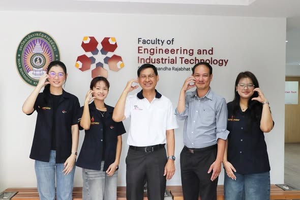
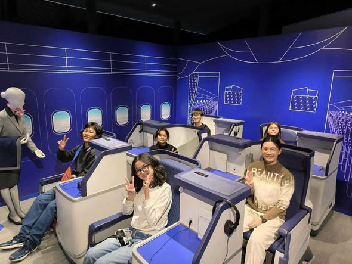
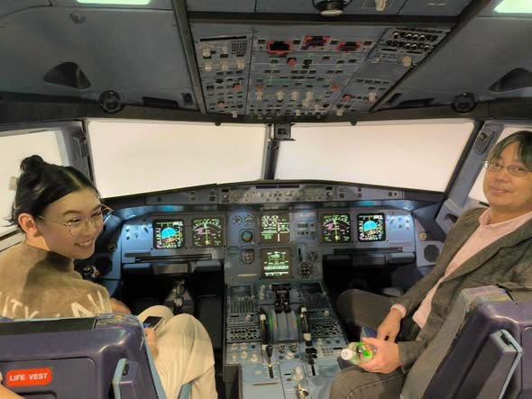
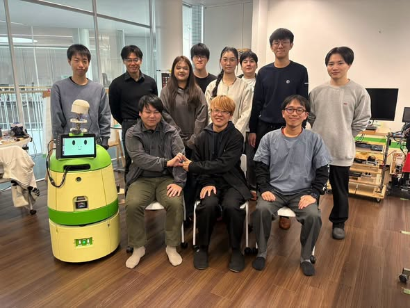
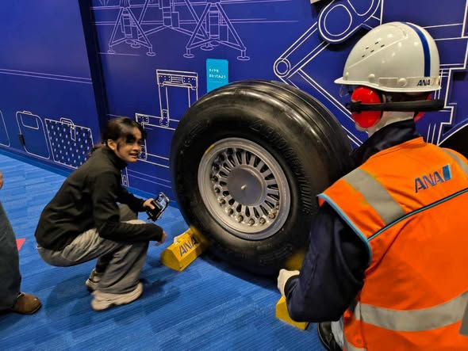

Kanagawa Institute of Technology ประเทศญี่ปุ่น (11 พฤศจิกายน – 21 ธันวาคม 2569)
นักศึกษาคณะวิศวกรรมศาสตร์และเทคโนโลยีอุตสาหกรรม มหาวิทยาลัยราชภัฏสวนสุนันทา เข้าร่วมโครงการอบรมเชิงปฏิบัติการแลกเปลี่ยนนักศึกษาและอาจารย์ตามความร่วมมือทางวิชาการในต่างประเทศ กับ Kanagawa Institute of Technology (KAIT) ประเทศญี่ปุ่น ภายใต้โครงการ KAIT Technical Internship Program (Fall 2026)
ภาพจาก: ผู้ช่วยศาสตราจารย์ ดร.ไกรพ เจริญโสภา

ขยายภาพ 1/5ปิดภาพ ×
2/5ปิดภาพ ×
3/5ปิดภาพ ×
4/5ปิดภาพ ×
5/5 (+6)ปิดภาพ ×